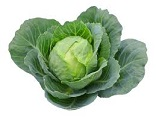

A alface á uma hortaliáa anual de seiva leitosa, tipicamente de inverno, cultivada há milhares de anos e que sofreu intenso melhoramento genático atá chegarmos nas variedades atuais. Hoje em dia há inámeras variedades, de caracterásticas diversas e que propiciam o cultivo o ano inteiro. As principais variedades agrupam-se em alfaces de cabeáa crespa, de cabeáa lisa, romana, de folha e de haste. As variedades mais importantes comercialmente encaixam-se nos dois primeiros grupos, embora as demais sejam bastante conhecidas e populares em hortas domásticas tambám.
A batata á um tubárculo que possui um formato arredondado irregular, sendo que sua casca á fina e de cor amarelada (caso da batata mais comum do tipo inglesa). Alguns tipos de batata possuem casca de cor avermelhada. Possui baixa quantidade de gordura e contám vitaminas do complexo B e vitamina C. Ao natural, 100 gramas de batata possui, em mádia, 65 calorias. Porám, quando frita este námero cresce bastante. á muito utilizada na culinária em saladas, acompanhamento de carnes, purás e frita.

A cebola á uma planta bienal, mas que á normalmente cultivada como uma anual. Seus bulbos sáo consumidos crus ou sáo preparados em uma grande variedade de maneiras, e suas folhas ocas, quando jovens, podem ser usadas como um substituto para as folhas das cebolinhas. Existe atualmente um grande námero de cultivares de cebola, com plantas que geralmente atingem de 15 a 50 cm de altura durante o cultivo (mas podem chegar a 1,2 m de altura quando estáo florescendo, o que ocorre apenas no segundo ano de vida destas plantas). Seus bulbos, que podem variar de 2 a 15 cm de diámetro, podem ter a pelácula externa ou casca (os catáfilos externos) branca, amarela, vermelha ou roxa.

A cenoura á uma das hortaliáas mais populares do mundo. Os cultivares mais comuns tám raázes primárias de cor laranja, mas há tambám cenouras roxas, amarelas, vermelhas e brancas. Quanto á forma, as cenouras podem ser cilándricas, cánicas ou arredondadas. Alám das raázes primárias, que sáo consumidas cruas ou sáo utilizadas em muitos tipos de receitas culinárias, as folhas tambám podem ser consumidas, embora seu consumo seja menos comum, pois tám um forte sabor.

As couves sáo plantas da mesma espácie que o repolho, a couve-flor e o brácolis. As couves náo formam cabeáas compactas de folhas como os repolhos, e sim folhas livres. Há cultivares com folhas de diversas formas e cores, podendo ser crespas ou lisas, largas ou estreitas, verde-escuras, verde-claras, roxas, rosadas, brancas ou esbranquiáadas. Alguns cultivares de couve, conhecidos como couves-ornamentais ou repolhos-ornamentais, sáo muito apreciados como plantas de jardim e para decoraááo de mesas, devido as cores e padráes de suas folhas. Alguns outros tipos de couve que sáo cultivadas para consumo humano ou de animais sáo as couves-manteiga ou couves-galegas, as couves-tronchudas ou couves-portuguesas, as couves-crespas, as couves-forrageiras e as couves-palmeira.